Every looper, one lookJeder Looper auf einen Blick
Control and watch up to 8 loopers from one place – in the browser. Each one is a big ring: green plays, red records, blue overdubs. The bar counter and the orange fill tell you where the loop is – readable from the drum throne.
Bis zu 8 Looper zentral von einer Stelle aus steuern und sehen – im Browser. Jeder ist ein großer Ring: grün spielt, rot nimmt auf, blau overdubt. Taktzähler und orange Füllung zeigen, wo der Loop gerade steht – lesbar vom Drumhocker aus.
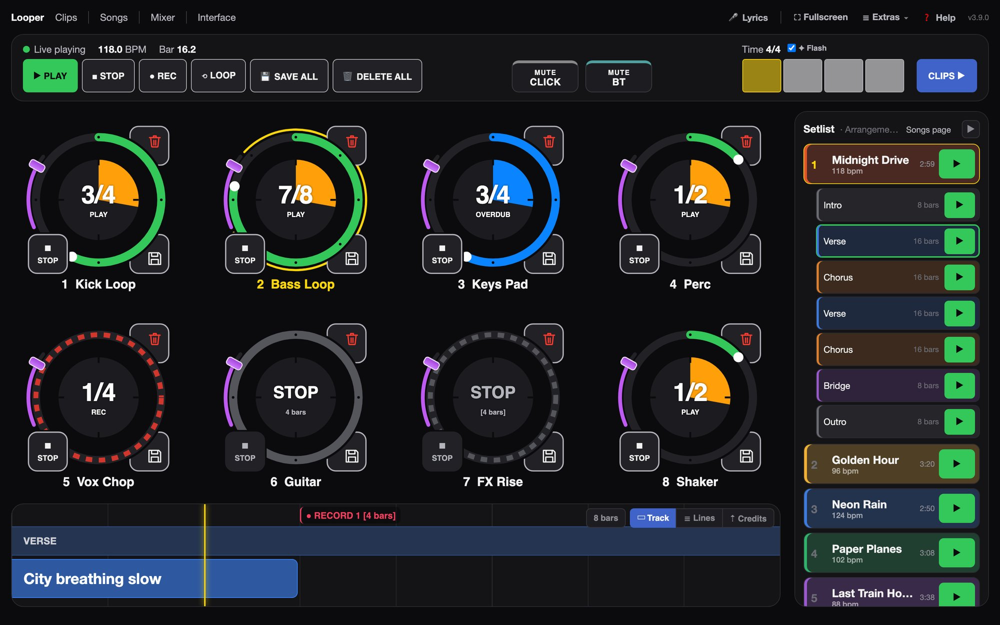
- 8 loopers, one at a time or all togetherRecord, play, overdub, stop and clear right on the ring – each looper on its own or several at once.
- 8 Looper, einzeln oder gleichzeitigAufnehmen, abspielen, overdubben, stoppen und löschen direkt am Ring – jeden Looper für sich oder mehrere zugleich.
- Remote control by hand or footKORG nanoKONTROL2 (works in its factory setting), Roland SPD-SX PRO and/or Morningstar MC6 Pro – kit and bank for both are included.
- Fernbedienung mit Hand oder FußKORG nanoKONTROL2 (läuft in der Werkseinstellung), Roland SPD-SX PRO und/oder Morningstar MC6 Pro – Kit und Bank für beide liegen bei.
- Choose the loop lengthHold a looper to set how many bars it records – it stops by itself, perfectly in time.
- Looplänge wählbarLooper lang halten und die Takte festlegen – er hört von selbst auf, exakt im Takt.
- Keep the good takeSave a loop as a clip with one tap, onto its own clip track – the looper keeps looping.
- Gute Takes behaltenEinen Loop mit einem Tipp als Clip sichern, auf seine eigene Clip-Spur – der Looper loopt weiter.
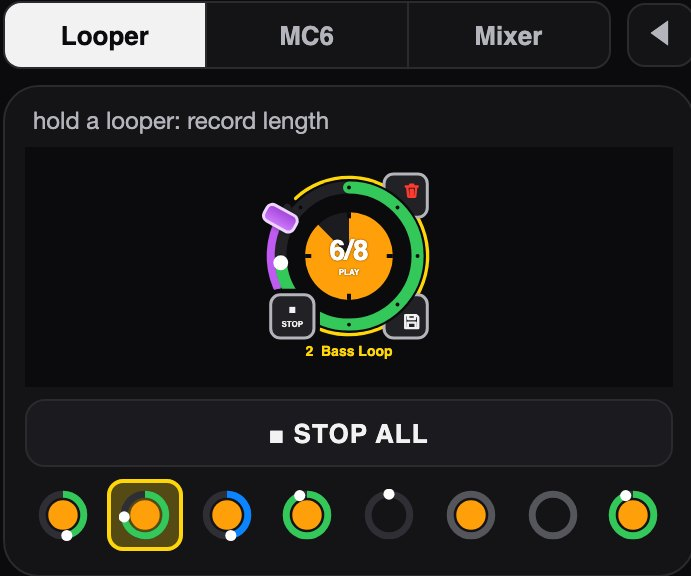
- Mini loopersOn the Clips page one looper is shown large, all others as small spinning rings – orange when they hold a take. Tap one to switch.
- Mini-LooperAuf der Clips-Seite ist ein Looper groß, alle anderen drehen sich als kleine Ringe – orange, wenn sie eine Aufnahme haben. Antippen wechselt.
- STOP ALLOne button stops every running looper, each at the end of its loop.
- ALLE STOPEin Knopf stoppt alle laufenden Looper, jeden am Ende seines Loops.
The Session View, on your feet and fingertipsDie Session-Ansicht unter Fuß und Finger
An overview of all tracks and scenes with clip names, a Morningstar MC6 Pro on screen and the setlist right next to it. Launch clips and scenes with a tap – or hands-free with the pedalboard.
Alle Spuren und Szenen mit Clip-Namen auf einen Blick, ein Morningstar MC6 Pro auf dem Bildschirm und die Setlist gleich daneben. Clips und Szenen per Tipp starten – oder freihändig mit dem Pedalboard.
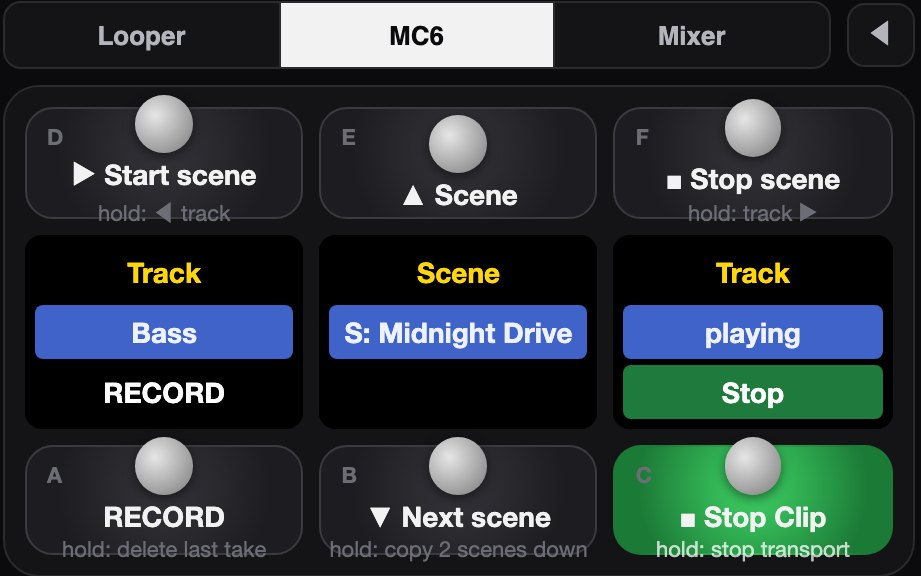
- Tap a clip, tap a sceneClips launch quantized like on Push; the scene name starts the whole scene. Running clips keep running, the arrangement keeps playing.
- Clip antippen, Szene antippenClips starten quantisiert wie am Push, der Szenenname startet die ganze Szene. Laufende Clips laufen weiter, das Arrangement spielt weiter.
- Record with one tapDirectREC: tap an empty slot and recording starts there – the track arms itself.
- Aufnahme mit einem TippDirectREC: leeren Slot antippen und dort startet die Aufnahme – die Spur schaltet sich selbst scharf.
- MC6 Pro includedThe Morningstar Live Clips script ships with it: tracks, scenes, record and play by foot – and every switch is mirrored on screen.
- MC6 Pro inklusiveDas Morningstar-Live-Clips-Script liegt bei: Spuren, Szenen, Aufnahme und Wiedergabe mit dem Fuß – jeder Schalter auch auf dem Bildschirm.
Your setlist runs the showDie Setlist führt durch den Abend
Songs and sections come straight from your arrangement – from a song track and a sections track, no locators needed. Jump to the next chorus, loop a section in rehearsal, read the lyrics as they come.
Songs und Abschnitte kommen direkt aus deinem Arrangement – aus einer Song- und einer Abschnitts-Spur, ganz ohne Lokatoren. Zum nächsten Refrain springen, einen Abschnitt in der Probe loopen, die Lyrics mitlesen.
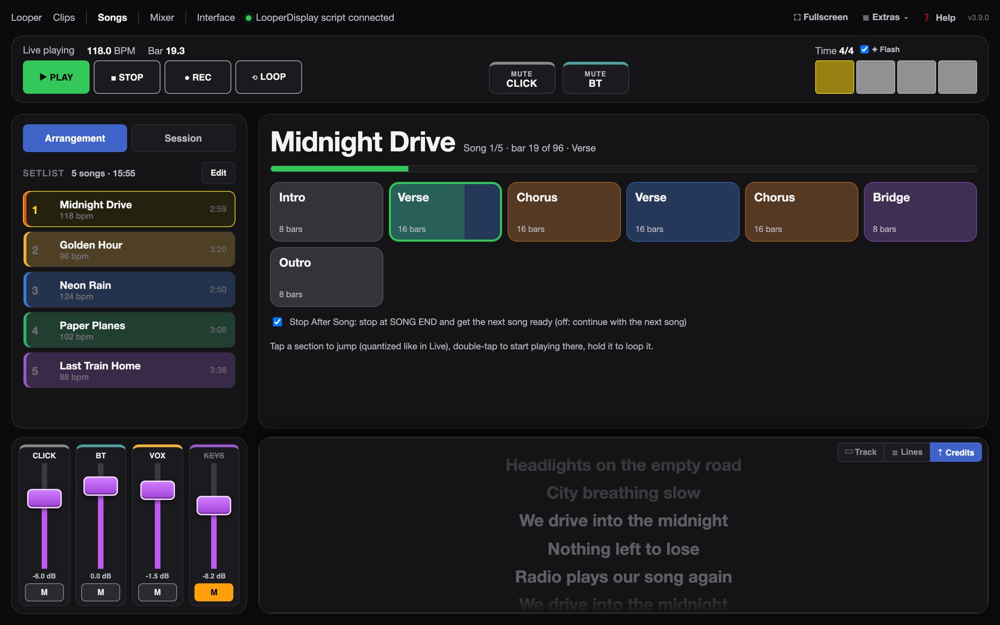
- Sections as big buttonsTap to jump (quantized), double-tap to start there, hold to loop it.
- Abschnitte als große TastenAntippen springt (quantisiert), Doppeltipp startet dort, lang halten loopt ihn.
- Stop after songLive stops at the end of the song and gets the next one ready.
- Stopp nach dem SongLive hält am Songende an und stellt den nächsten bereit.
- Lyrics and looper cuesLyrics tracks scroll along; looper commands placed in the arrangement (record, overdub, stop) run by themselves.
- Lyrics und Looper-BefehleLyrics-Spuren laufen mit; Looper-Befehle im Arrangement (aufnehmen, overdubben, stoppen) laufen von selbst.
See where every signal goesSehen, wohin jedes Signal geht
The Interface page draws your whole routing as a map: inputs of the audio interface, tracks and groups, sends, returns and outputs. Channel strips above it show input, sends, volume and output of every track.
Die Soundkarten-Seite zeichnet dein ganzes Routing als Karte: Eingänge der Soundkarte, Spuren und Gruppen, Sends, Returns und Ausgänge. Die Kanalzüge darüber zeigen Eingang, Sends, Lautstärke und Ausgang jeder Spur.
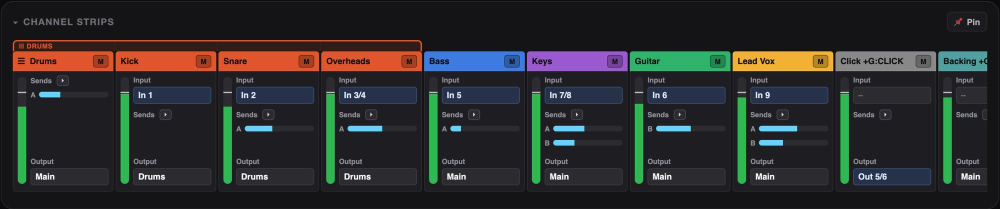
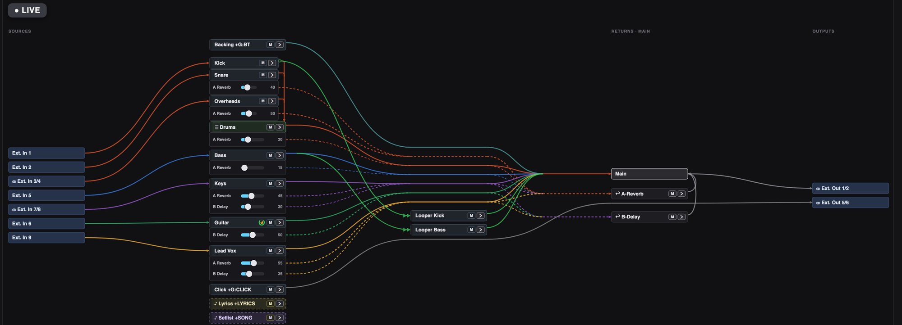
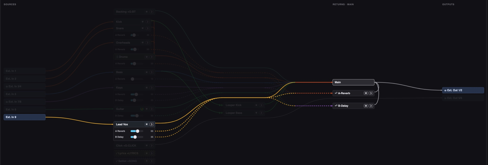
- Presets per audio interfaceUi24R in the rehearsal room, laptop speakers on the road: save the routing per interface – clearly laid out, set up offline too, stored inside the Live set.
- Presets je SoundkarteUi24R im Proberaum, Laptop-Lautsprecher unterwegs: Routing je Soundkarte speichern – übersichtlich, auch offline einzurichten, gespeichert im Live-Set.
- Edit by draggingDrag a line to change an input or output, set sends and volume with sliders – and send it all to Live at once.
- Bearbeiten per ZiehenLinie ziehen ändert Eingang oder Ausgang, Sends und Lautstärke per Regler – und alles auf einmal an Live schicken.
Mixer, mute buttons and your own MIDIMixer, Stumm-Tasten und eigenes MIDI
Big faders for the tracks you need on stage, the two most important mute buttons in the top bar of every page. No MIDI mapping needed – but if you want, put any button of the top bar on a key of your own controller.
Große Fader für die Spuren, die du auf der Bühne brauchst, die zwei wichtigsten Stumm-Tasten oben auf jeder Seite. Kein MIDI-Mapping nötig – wer will, legt jede Taste der oberen Leiste auf eine Taste seines eigenen Controllers.
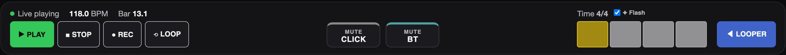
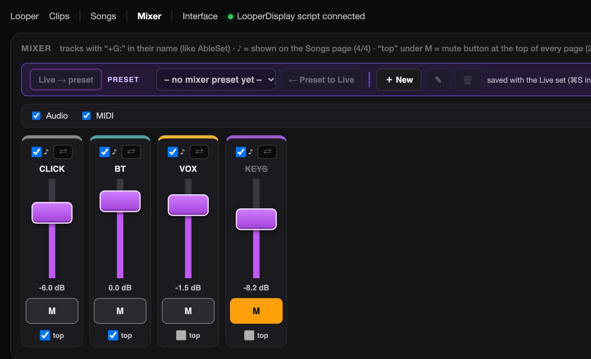
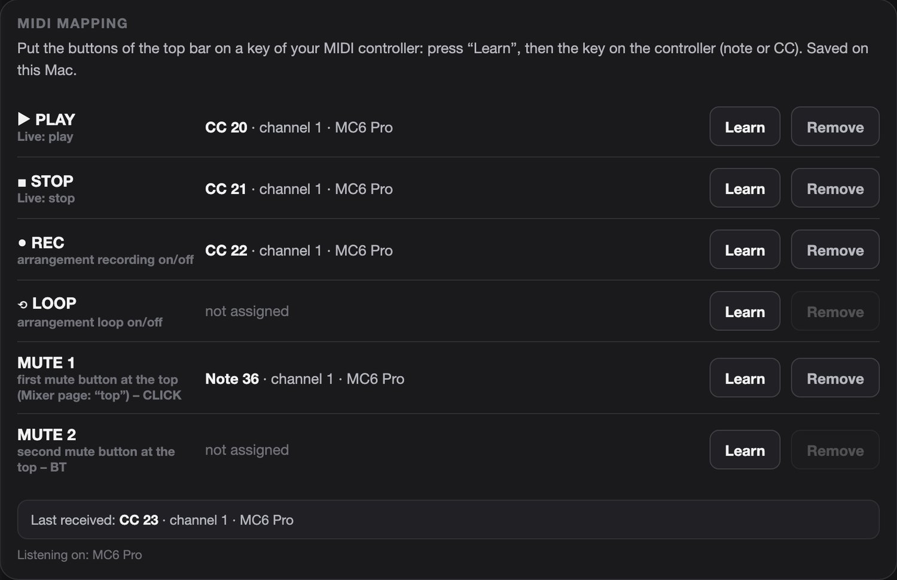
- Faders by track nameEvery track with “+G:” in its name gets a fader – pick four for the Songs and Clips pages.
- Fader per SpurnameJede Spur mit „+G:“ im Namen bekommt einen Fader – vier davon wählst du für Songs- und Clips-Seite.
- MIDI learnPress “Learn”, hit a key on your controller – done. Play, stop, record, loop and both mute buttons.
- MIDI lernen„Lernen“ drücken, Taste am Controller drücken – fertig. Play, Stop, Rec, Loop und beide Stumm-Tasten.
Several Live computers, one showMehrere Live-Rechner, eine Show
Main and backup Mac – or two players with their own Live sets? LooperPilot links them over the network and keeps the song structure in step.
Haupt- und Backup-Mac – oder zwei Musiker mit eigenem Live-Set? LooperPilot verbindet sie übers Netz und hält die Songstruktur im Gleichschritt.
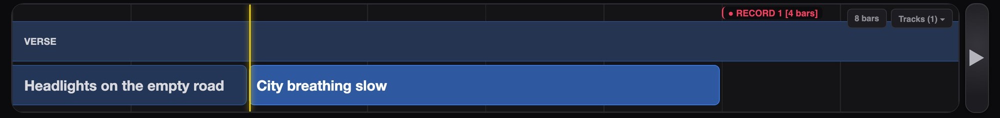
On the iPad, the phone, the second screenAuf iPad, Handy und zweitem Bildschirm
Every page also runs in the browser of any tablet or phone in the same network – scan the QR code, add it to the home screen, done. No app store, no cloud.
Jede Seite läuft auch im Browser jedes Tablets oder Handys im selben Netz – QR-Code scannen, zum Home-Bildschirm hinzufügen, fertig. Kein App Store, keine Cloud.
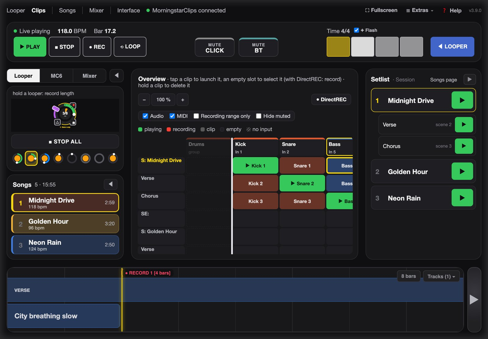
Want to try it?Lust, es auszuprobieren?
LooperPilot is in a closed beta. Write a short mail with your setup – I'll send you an invitation and the guide.
LooperPilot ist in einer geschlossenen Beta. Schreib mir kurz, womit du spielst – ich schicke dir eine Einladung und die Anleitung.